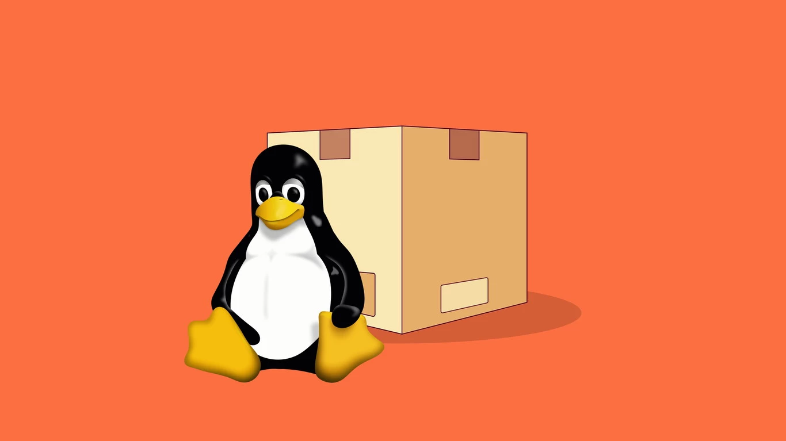
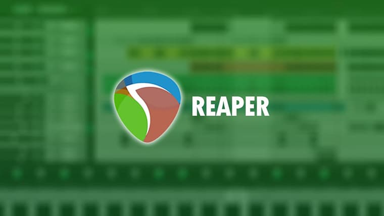
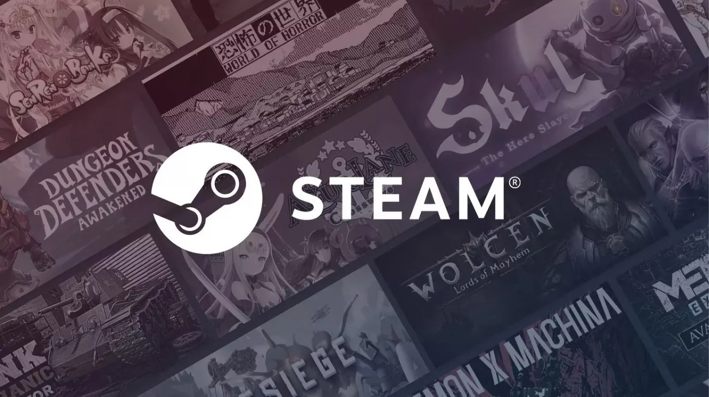

Your favorite softwares
to make it all much more secure and easy
We're fully focused on privacy and security, so we deliver a few programs that ensure this to your daily use.
Another branch of this efforts is to deliver the most complete a fully functional desktop, with some familiar programs and others that maybe you don't know yet but they are very easy to use.
All of this features are backed by Debian bookworm as the base system.
The Debian that you already know with super powers.

CLI easy and fast addons
With addons like atuin, liquidprompt, fd, bat and many others, your bash certainly be much more easy and cozy to deal.

Program package format
Do you like flatpaks, snaps or appimages? You're fully covered, we provide very easy ways to install all of them! (take a look on am)

Multimedia content creation
If you are a content creation, this is the right distro for you, the apt and am repositories have tons of packages to easy install the latest versions of REAPER, KDEnLive, GIMP, Blender and many others.

Linux gaming
You're looking for fun? With the special version of Steam, you just need to install Your games, chill and play! It's the same compatibility and performance from Steam Deck.